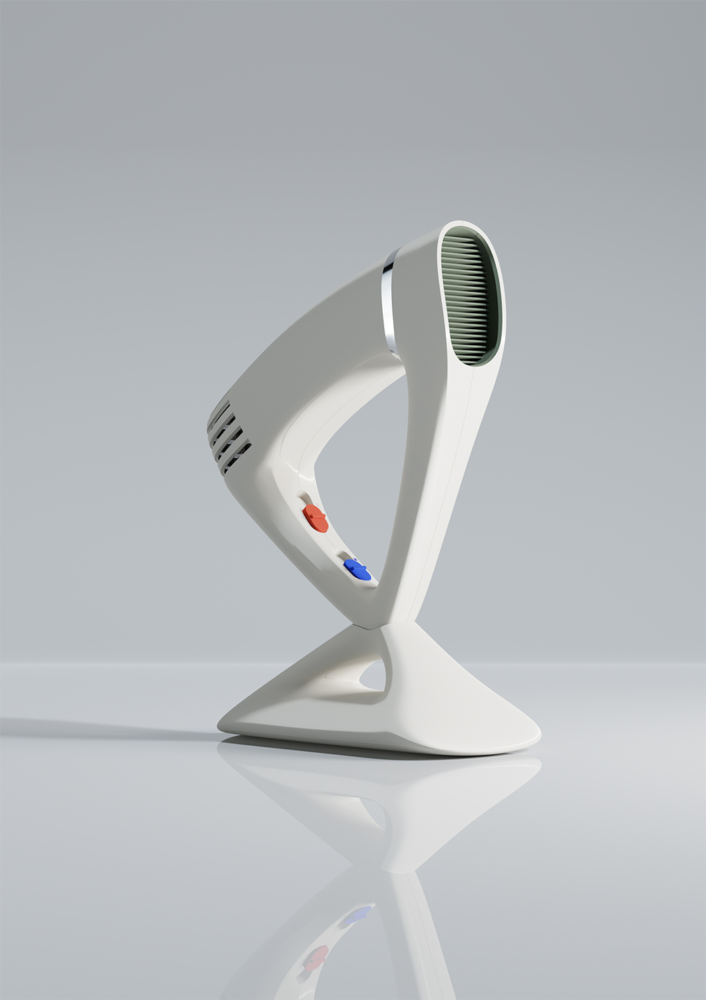

A group project designing household appliances for the elderly. This is a wireless hairdryer with an ergonomic front handle.
Renders
Surface Modelling

The forms of the earphones were 'sculpted' through surface modelling. After several iterations of CAD models and resin printed prototypes, the focus soon shifted to animations and renders. These renders were done with Blender.
The forms of the earphones were 'sculpted' through surface modelling. After several iterations of CAD models and resin printed prototypes, the focus soon shifted to animations and renders. These renders were done with Blender.
The forms of the earphones were 'sculpted' through surface modelling. After several iterations of CAD models and resin printed prototypes, the focus soon shifted to animations and renders. These renders were done with Blender.
The forms of the earphones were 'sculpted' through surface modelling. After several iterations of CAD models and resin printed prototypes, the focus soon shifted to animations and renders. These renders were done with Blender.